Η Ελληνική Επανάσταση 1821
"Η ΕΘΝΙΚΗ ΠΑΛΙΓΓΕΝΕΣΙΑ"
Η ορκωμοσία των Φιλικών
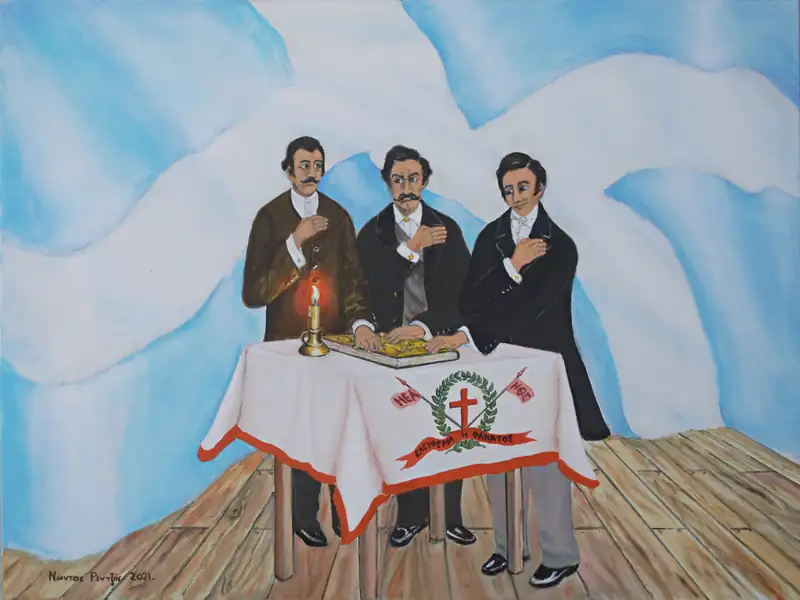
λάδι σε καμβά 60*80 εκ.
Στις 14 Σεπτεμβρίου 1814 ιδρύεται στην Οδησσό της Ουκρανίας μια μυστική οργάνωση, η Φιλική Εταιρεία, με σκοπό την προετοιμασία της Ελληνικής Επανάστασης και την απελευθέρωση των Ελλήνων από τον Οθωμανικό ζυγό. Συστάθηκε από τρεις εμπόρους τους Εμμανουήλ Ξάνθο, τον Νικόλαο Σκουφά και τον Αθανάσιο Τσακάλωφ. Η μύηση περιλάμβανε μυστικό όρκο πίστης και υποταγής και επικοινωνούσαν μεταξύ τους με κώδικες, ψευδώνυμα και συνθηματικά θυμίζοντας έντονα τα πρότυπα των... "Μασονικών Στοών". Η δομή ήταν πυραμιδοειδής με δεσπόζουσα ηγετική ομάδα, την "Αόρατη Αρχή"...
Kαβάλα στην μάχη...
"εγώ εκοιμόμουν στο Βαλτέτζι, εγευμάτιζα εις την Πιάνα και εδείπναγα εις το Χρυσοβίτζι και επερεφερόμουν στα τρία Όρδια"
— Κολοκοτρώνης

Μάχη στα Δερβενάκια 100*120 εκ.
Από τις κρίσιμες στιγμές στον αγώνα ήτανε η μάχη στα Δερβενάκια και η απώθηση του Ιμπραήμ. Χωρίς την συνδρομή του Γέρου του Μοριά το αποτέλεσμα του αγώνα δεν θα ήταν ίδιο. Η νίκη στα Δερβενάκια Μόλις ο Κολοκοτρώνης βεβαιώθηκε ότι το πρωί της 26ης Ιουλίου του 1822 ο στρατός του Δράμαλη κατευθυνόταν στο στενό, πήγε και ο ίδιος στο Αγριλόβουνο και στη θέση Παληόχανο. Το μεσημέρι κι αφού οι Τούρκοι είχανε προχωρήσει αρκετά μέσα στο στενό, με την εμπροσθοφυλακή μπροστά στο Παληόχανο... κήρυξε γενική επίθεση. Με απώλειες γύρω στους 2.500 με 3.000 νεκρούς και τραυματίες και την συσσωρευμένη εξασθένιση ο Δράμαλης δεν ήταν πλέον το ίδιο επικίνδυνος.
Η νίκη στα Δερβενάκια. Μόλις ο Κολοκοτρώνης βεβαιώθηκε ότι το πρωί της 26ης Ιουλίου του 1822 ο στρατός του Δράμαλη κατευθυνόταν στο στενό, πήγε και ο ίδιος στο Αγριλόβουνο και στη θέση Παληόχανο. Το μεσημέρι κι αφού οι Τούρκοι είχανε προχωρήσει αρκετά μέσα στο στενό, με την εμπροσθοφυλακή μπροστά στο Παληόχανο... κήρυξε γενική επίθεση. Με απώλειες γύρω στους 2.500 με 3.000 νεκρούς και τραυματίες και την συσσωρευμένη εξασθένιση ο Δράμαλης δεν ήταν πλέον το ίδιο επικίνδυνος.
Ο Κανάρης επί το έργον
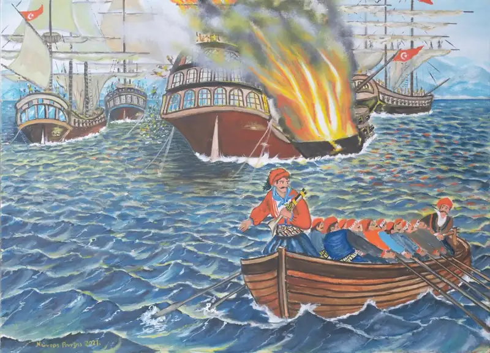
Λάδι σε καμβά 60*85 εκ.
Κωνσταντίνος Κανάρης, ο Ψαριανός πυρπολητής του αγώνα... Στα μετέπειτα χρόνια διετέλεσε Ναύαρχος, Πολιτικός, και 5 φορές Πρωθυπουργός της Ελλάδας ως προσωπικότητα κοινής εμπιστοσύνης.
Ο Αθανάσιος Διάκος
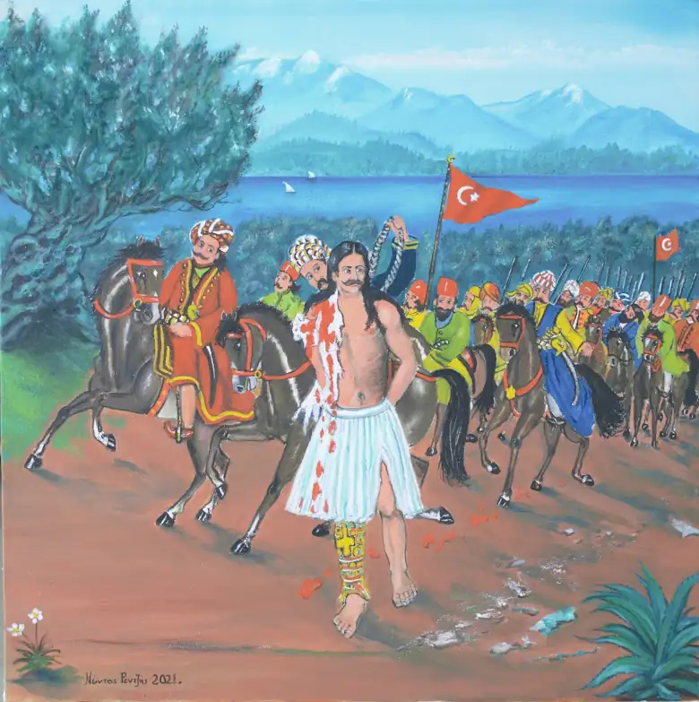
οδηγείται στον μαρτυρικό του θάνατο - Λάδι σε καμβά 66 x 65 εκ.
Στις 22 Απριλίου 1821 ο Κιοσέ Μεχμέτ κι ο Ομέρ Βρυώνης με 8000 στρατό και 1000 ιππείς κατευθύνονται από το Ζητούνι (Λαμία) προς τα Σάλωνα (Άμφισσα) με σκοπό να καταστείλουν την Επανάσταση στην Ανατολική Ρούμελη και Πελοπόννησο. Στο δρόμο τους, κατά μήκος του Σπερχειού, βρίσκουν μπροστά τους Δυοβουνιώτη, Πανουργιά και Διάκο με 1500 Έλληνες. Στην άνιση μάχη που ακολούθησε ο Πανουργιάς κι ο Δυοβουνιώτης οπισθοχώρησαν σε πιο απρόσιτες θέσεις.
Ο Διάκος κρατούσε απεγνωσμένα τη γέφυρα της Αλαμάνας σ’ έναν αγώνα μέχρις εσχάτων. Οι σύντροφοί του σκοτώνονται κι ο ίδιος τραυματισμένος στον δεξί του ώμο συλλαμβάνεται κι οδηγείται πίσω στο Ζητούνι όπου και βρίσκει μαρτυρικό θάνατο στις 24 Απριλίου 1821...
Οδυσσέας Ανδρούτσος
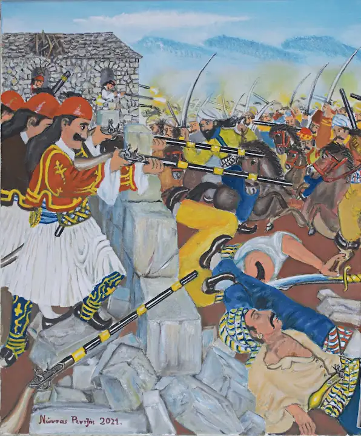
Λάδι σε καμβά 60*50 εκ.
8 Μαϊου 1821 ο Κισέ Μεχμέτ και ο Ομέρ Βρυώνης με 8000 στρατό βαδίζοντας από το Ζητούνι (Λαμία) προς τα Σάλωνα (Άμφισσα) και από εκεί προς την εξεγερμένη Πελοπόννησο , βρήκαν σοβαρή αντίσταση στο χάνι της Γραβιάς. Εκεί ταμπουρωμένοι 117 αγωνιστές υπό τον Οδυσσέα Ανδρούτσο , ύψωσαν αδιαπέραστο τοίχος φωτιάς.... Οι Τούρκοι έπεσαν με μανία πάνω στους τοίχους των κτισμάτων με σκοπό να τους γκρεμίσουν. Άφοβοι οι Έλληνες πυροβολούσαν ασταμάτητα πάνω στο σωρό των Τούρκων και σκότωσαν πολλούς. Οι Τούρκοι υποχωρούσαν, ανασυντάσσονταν και ξανά επιτίθονταν , με τα ίδια οικτρά αποτελέσματα.... Η τόσο πετυχημένη και απροσδόκητη αντίσταση των ολίγων ριψοκίνδυνων ανδρών σε τόσο μεγάλο ιππικό και πεζικό στις αρχές ακόμα της Επανάστασης βοήθησε σημαντικά στην εμψύχωση του Αγώνα και έδωσε δίκαια μεγάλη φήμη στο Οδυσσέα.
Τον Ανδρούτσο ο λαϊκός θρύλος τον ήθελε :”να πηδά σαν ελάφι , να τρέχει σαν άλογο και να ιππεύει σαν Κένταυρος”. Όμως, είχε άδοξο και δραματικό τέλος από τους πολιτικούς του αντιπάλους , που τον δολοφόνησαν και τον πέταξαν από τα τείχη της Ακρόπολης Αθηνών την 5 Ιουνίου 1825. Ζοφερή εντύπωση προκαλεί το γεγονός ότι και οι τρεις σπουδαίοι οπλαρχηγοί Κολοκοτρώνης , Καραϊσκάκης και Ανδρούτσος , εκδιώχθηκαν ,αφορίστηκαν και φυλακίστηκαν από τους πολιτικούς τους αντιπάλους.
Επική νίκη στο Βαλτέτσι
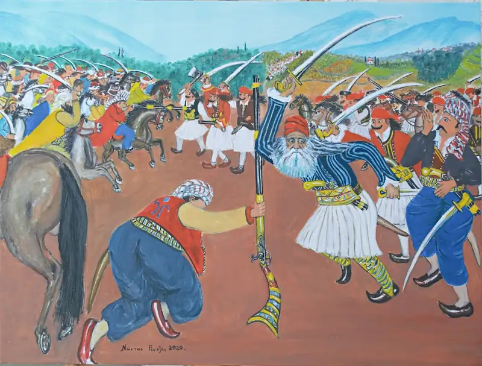
Λάδι σε καμβά 60*80 εκ.
Τα ξημερώματα της 12 ης Μαΐου του 1821 οι Τούρκοι με αρχηγό τον Βαρδουνιώτη Ρουμπή με 5000 άνδρες επετέθηκαν στο Βαλτέτσι, όπου βρίσκονταν οι Μαυρομιχαλαίοι και ο Μητροπέτροβας. Ο Κολοκοτρώνης έσπευσε προκαλώντας αντιπερισπασμό από την βόρια πλευρά του Βαλτετσίου φωνάζοντας: “βάστα Μητροπέτροβα έρχεται και ο Πλαπούτας”. Αναγκάζοντας τους Τούρκους μετά από εικοσιτέσερις ώρες σε άτακτη υποχώρηση προς την Τριπολιτσιά με τεράστιες απώλειες. Μετά το Βαλτέτσι οι Έλληνες απόκτησαν αυτοπεποίθηση με συνεχείς νίκες στα Δολιανά και Βέρβενα.
Νικηταράς ο Τουρκοφάγος
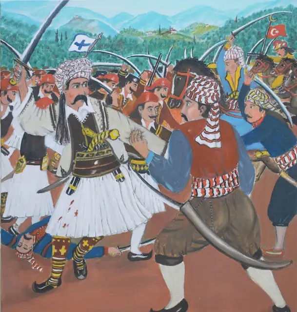
Λάδι σε καμβά 80*60 εκ.
Η δεύτερη ήττα των Τούρκων στα Δολιανά την 18-5-1821 ματαίωσε την διάλυση του Ελληνικού στρατοπέδου των Βερβένων , τόνωσε το ηθικό των επαναστατών , και άνοιξε το δρόμο για την άλωση της Τριπολιτσιάς. Σε αυτές τις μάχες ο Νικηταράς σκότωσε πολλούς Τούρκους , παίρνοντας έτσι τον τίτλο του “Τουρκοφάγου”..... Μετά την ήττα ο Τουρκικός στρατός τράπηκε σε άτακτη φυγή προς την οχυρωμένη Τριπολιτσιά.
Στην φυγή τους πετούσαν πίσω τα άρματα τους για να χασομεράνε τους κακοοπλισμένους Έλληνες που τα μάζευαν, γλιτώνοντας έτσι μεγαλύτερες απώλειες..... Στα αρχικά στάδια της Επανάστασης δεν υπήρχε επαρκής οπλισμός, και έτσι πολεμούσαν με ότι μπορούσαν να προμηθευτούνε, όπως: πέτρες , χατζάρια , ραβδιά ,ρόπαλα , δρεπάνια , κοσές , δίκρανα, τσεκούρια, κυνηγητικά , φίστες, αρκεβούζια ,τρομπόνια , καριοφίλια, σπαθιά και πιστόλες. Τεχνογνωσία παρασκευής μπαρουτιού διέθεταν και μάλιστα σε ορισμένες περιοχές όπως η Δημητσάνα παρασκεύαζαν μπαρούτι και για τις ανάγκες του Τουρκικού στρατού.
Νίτρο, θειάφι , κάρβουνο σε ορισμένη αναλογία κοπανισμένα από τους μπαρουξήδες στους μπαρουτόμυλους η και από οποιονδήποτε σε ξύλινα γουδιά και το μπαρούτι έτοιμο..... Το μεγάλο πρόβλημα ήτανε η εύρεση μολυβιού για τα βόλια. Ο αρχιμανδρίτης Ιερόθεος Αθανασόπουλος πρότεινε και πρωτοστάτησε στο ξήλωμα της μολύβδινης σκεπής του Μεντρεσέ του Άργους (Ιεροδιδασκαλείου) από 25 Απριλίου έως 5 Μαΐου 1821. Ένα μεγάλο μέρος από το μολύβι το μετέφεραν στις αρχές Μαΐου με εκατόν είκοσι δύο ζώα στο στρατόπεδο των Βερβενών για επεξεργασία....
Η επέλαση του Κολοκοτρώνη στην Τριπολιτσά
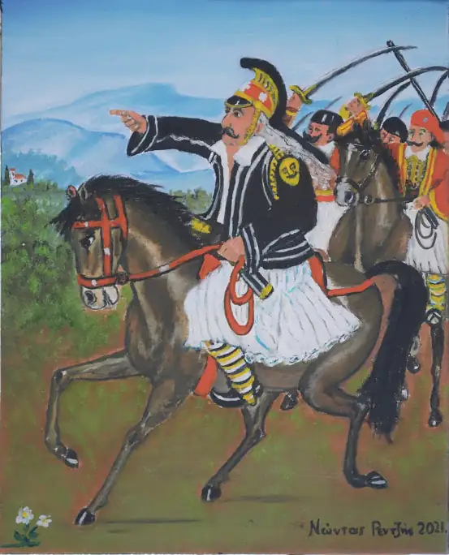
Λάδι σε καμβά 30*25 εκ.
Από τις αρχές Ιουνίου 1821 η Τριπολιτσά πολιορκείται και ελευθερώνεται στις 23 Σεπτεμβρίου.
Γιώργος Ανεμογιάννης
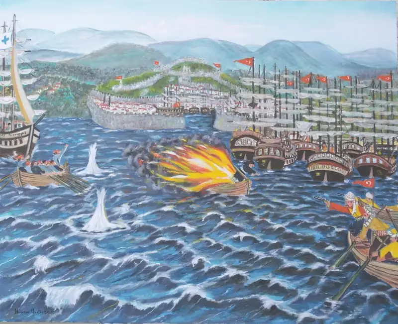
Άλλη μια θυσία στο βωμό της ελευθερίας - Λάδι σε καμβά, 80*100 εκ.
10 Ιουνίου 1821 ο εικοσιπεντάχρονος Γιώργος Ανεμογιάννης , ναύτης στο πλοίο της Μπουμπουλίνας αναλαμβάνει να βάλλει “μπουρλότο” στα Τούρκικα πλοία που είχαν καταπλεύσει στη Ναύπακτο. Με ένα μικρό ιστιοφόρο γεμάτο καυσόξυλα πλησίασε τα εχθρικά πλοία , προσπαθόντας να το γαντζώσει σ' αυτά. Όμως ο αέρας γύρισε και το” μπουρλότο” παρά τις ηρωϊκές του προσπάθειες καιγόταν μάταια...Από την σωστική τους λέμβο που ακολουθούσε οι συναδελφοί του φώναζαν να τα παρατήσει και να πηδήξει στην θάλασσα να τον σώσουν -Εκείνος συνέχισε την μάταιη προσπάθεια απαντώντας τους : " αδέλφια λευτεριά δεν ζητάτε; ας χαθώ εγώ πρώτος γ' αυτήν". Όταν τσουρουφλήστηκε από την φωτιά και τον φλόμωσε ο καπνός , προσπάθησε να φύγει κολυμπώντας αλλά ήταν αργά.... Οι Τούρκοι τον κυνήγησαν με τις λέμβους τον συνέλαβαν τον σούβλισαν και τον έψησαν ζωντανό. Τώρα το μνημείο του Γιώργη βρίσκεται στον Ενετικό προμαχώνα στην είσοδο του λιμανιού της Ναυπάκτου.
Ο θρυλικός αετός της Ρούμελης - Γεώργιος Καραϊσκάκης
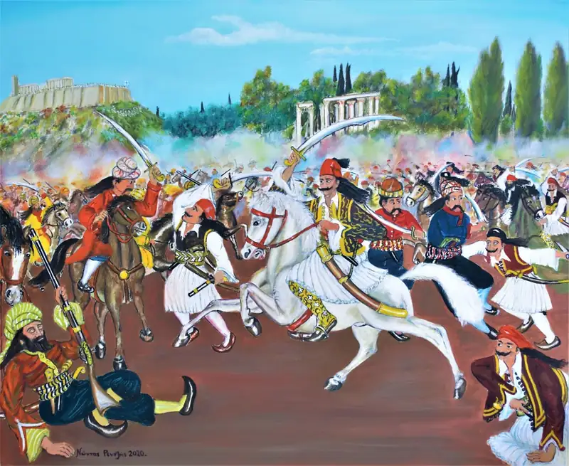
90*110 εκ.
Γενικός Αρχηγός των στρατευμάτων της ανατολικής Ελλάδος. Ξαναζωντάνεψε τον Αγώνα που είχε αρχίσει να φθίνει και απελευθέρωσε την Στερεά Ελλάδα που είχε υποταχτεί. Οι στρατηγικές ικανότητες του Καραϊσκάκη αποδείχτηκαν ανώτερες και αξιότερες όλων. Τον θαύμαζαν ακόμη και οι εχθροί του «Έναν Ρεσίτη» (εννοούσαν τον Κιουταχή) έλεγαν, «έχουν οι Τούρκοι, κι έναν Καραϊσκάκη οι Έλληνες· δύο λέοντες πολεμούν, κι άγνωστο ποιος θα καταβάλλει τον άλλον!».
Η ηρωίδα της Ακρόπολης - Ασήμω Λιδωρίκη
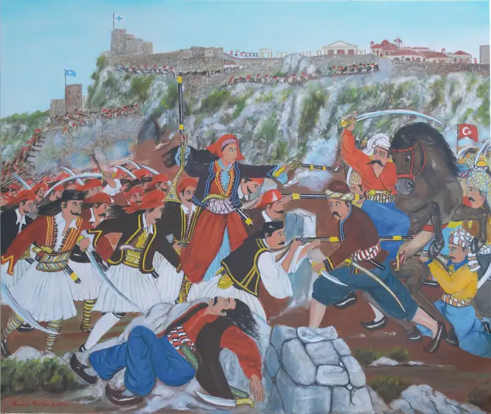
100*120 εκ.
Η Ασήμω Λιδωρίκη ή Νταλιάνα (από το μακρύ Ιταλικό καριοφίλι) γυναίκα του Γκούρα το Δεκέμβριο του 1823 εγκαταστάθηκε στο Ερέχθειο, όπου έως τότε κατοικούσε η οικογένεια του Ανδρούτσου. Η Ασήμω συμμετείχε οπλισμένη στις δραστηριότητες της φρουράς. Μετά τον θάνατο του Γκούρα (30 Σεπτεμβρίου 1826) και κατά την δεκάμηνη πολιορκία από τον Κιουταχή συμμετείχε στη διοίκηση του φρουρίου της Ακρόπολης. Σκοτώθηκε στις 12 Ιανουαρίου 1827 από βόμβα που έπληξε το Ερέχθειο.
20 Μαΐου 1825 – Η Μάχη στο Μανιάκι
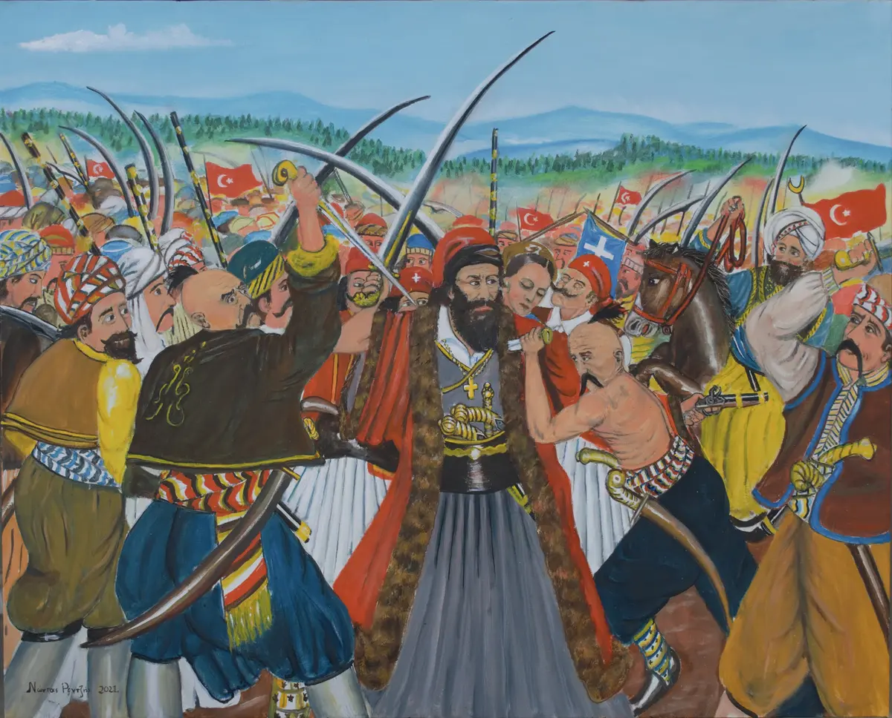
Λάδι σε καμβά 80 *100 εκ
Ο Ιμπραήμ αφού κατέλαβε το Νεόκαστρο έγινε κυρίαρχος όλης της Μεσσηνίας και βάδιζε για την Τριπολιτσά με 6000 πεζικό και ιππικό. Στο Μανιάκι έδωσε νικηφόρα μάχη με το σώμα του Παπαφλέσσα που αριθμούσε περίπου 500 αγωνιστές. Στη μάχη αυτή σκοτώθηκαν όλοι σχεδόν οι Έλληνες καθώς κι ο Παπαφλέσσας. Ανενόχλητος πλέον ο Ιμπραήμ κατέκτησε την Τριπολιτσά στις 11 Ιουνίου 1825.
Το Μεσολόγγι, παγκόσμιο σύμβολο ελευθερίας
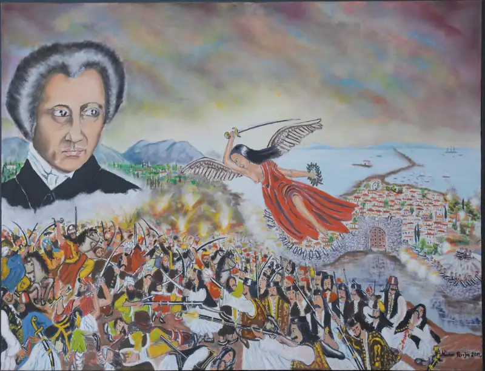
λάδι σε καμβά 60*80 εκ. (ύμνος στην ελευθερία)
Ο λαϊκός μας ζωγράφος Νώντας Ρεντζής, απόγονος υπερασπιστών του Μεσολογγίου, έχοντας ακούσει από πρώτο χέρι τις εμπειρίες των παππούδων του, μας χάρισε έναν ακόμα πίνακα με ιστορικό περιεχόμενο. Ο ίδιος μάλιστα συγκλονισμένος από την ηρωική γοητεία των έγκλειστων του Μεσολογγίου γράφει: "Οι πεινασμένοι ταπεινοί υπερασπιστές του Μεσολογγίου που πολεμούσαν πάνω στις τάπιες, που σκάβανε λαγούμια, που έκαναν γιουρούσια, που άντεχαν τα ρεσάλτα δύο στρατιών και τα τεχνάσματα Ευρωπαίων μηχανικών... αναγκάστηκαν από την πείνα σε ηρωική έξοδο και ολοκαύτωμα. Εκεί που έδειχναν όλα να έχουνε χαθεί, εκεί... μέσα στα ερείπια και τις στάχτες πρόβαλε κόκκινη από το αίμα η Λευτεριά! Η ηθική ωφέλεια, μεγαλύτερη των πολλών νικών, κατάφερε να αφυπνίσει και να συγκλονίσει όλον τον πολιτισμένο κόσμο! Κλάψτε άνανδροι χριστιανοί, το Μεσολόγγι δεν υπάρχει πια. Χωρίς την μεγάλη παγκόσμια συγκίνηση που προκάλεσε το Μεσολόγγι με το ολοκαύτωμα του, το Ναυαρίνο δεν θα ακολουθούσε... Διεκδίκησαν την λευτεριά τους μόνοι, θυσιάζοντας τα πάντα. Το Μεσολόγγι έγινε το παγκόσμιο σύμβολο ελευθερίας".
Ο προπάππος Ρεντζής και ο προπάππος Βαζούρας του Νώντα ουσιαστικά έστησαν μόνοι τους αυτόν τον πίνακα. Ήταν η στιγμή που βγαίναν στο "γελέκι" οι πελταστές από κρυφόπορτες, για ξαφνικό γιουρούσι, προσπαθώντας να μην αφήνουν τους Τούρκους να στήνουν ταμπούρια κοντά. Στην συγκεκριμένη σκηνή το γιουρούσι κράτησε τόσο πολύ μέχρι που τους πήρε η μέρα. "ταπεινό μνημόσυνο στους εξοδίτες προγόνους μου".
Λευτεριά για λίγο πάψε να χτυπάς με το σπαθί
τώρα σίμωσε και κλάψε εις του Μπάιρον το κορμί.
— Δ.Σολωμός
Κώστας Σιαδήμας
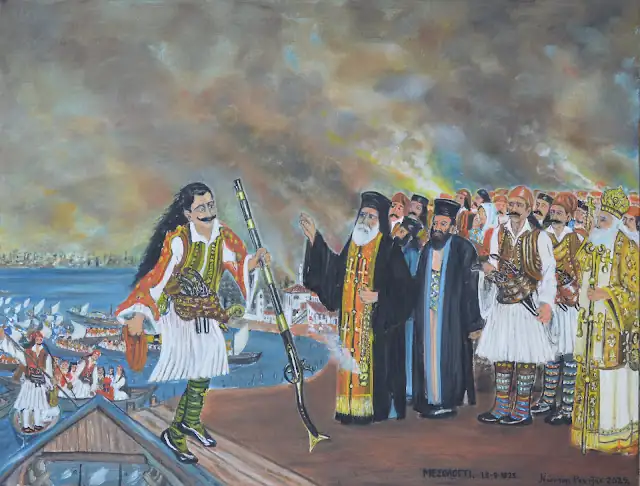
Ο Οπλαρχηγός Κώστας Σιαδήμας με τους Αποκουρίτες αγωνιστές μπαίνει στο σκληρά πολιορκούμενο Μεσολόγγι. Λάδι σε καμβά 80*100εκ.
Οπλαρχηγός της Απόκουρου (περιοχή της Δυτικής Ελλάδας) και μέλος της Φιλικής Εταιρίας, γεννήθηκε στο χωριό Γκερτοβό (Αργυρό πηγάδι) το 1792. Πήρε μέρος στις μάχες του Πετροχωριού, Πέτα, Καρπενησίου, Καλιακούδα, στην αποτυχημένη επίθεση της Ναυπάκτου και άλλες πολλές. Μπήκε στο πολιορκούμενο Μεσολόγγι στις 13 Σεπτεμβρίου 1825 με 70 Αποκουρίτες μαχητές του, και πολέμησε στην τάπια του Δεσπότη. Σκοτώθηκε κατά την έξοδο στις 10 Απριλίου 1826.
Μέσα στο Μεσολόγγι θέριζε η πείνα...
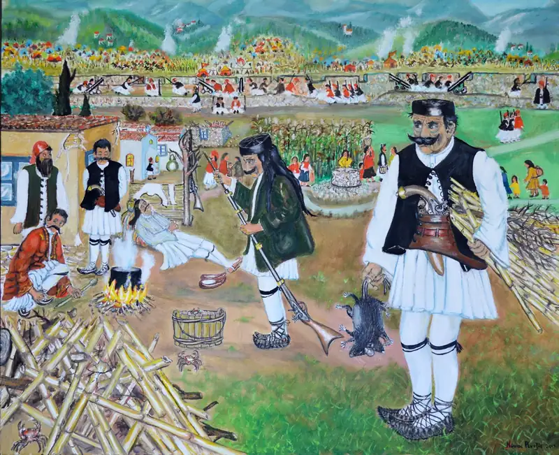
λάδι σε καμβά 90*110 εκ.
Άκρα του τάφου σιωπή στον κάμπο βασιλεύει.
Λαλεί πουλί, παίρνει σπυρί κι η μάνα το ζηλεύει
Τα μάτια η πείνα εμαύρισε στα μάτια η μάνα μνέει
στέκει ο Σουλιώτης ο καλός παράμερα και κλαίει
Έρμο τουφέκι σκοτεινό, τι σ΄ έχω ΄γω στο χέρι;
Όπου συ μου ΄γινες βαρύ κι ο Αγαρηνός το ξέρει.
(Η πείνα θέριζε μανάδες και παιδιά, μαζί και τους αγωνιστές…) Σολωμός.
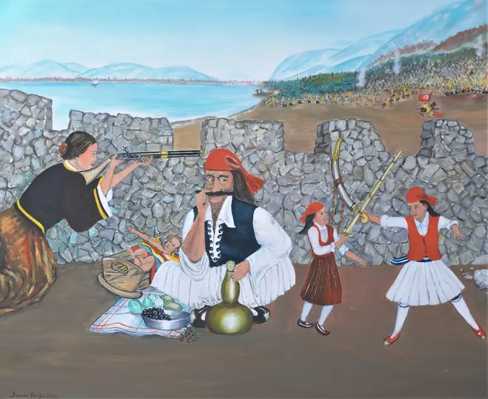
λάδι σε καμβά 100*120 εκ.
Η Μεσολογγίτισσα γυναίκα λαμπρό σύμβολο της επανάστασης, φροντίζει την οικογένεια, δουλεύει με τσαπιά και φτυάρια στις τάπιες, παίρνει μέρος στης μάχες δίπλα στους άνδρες, και κατά την έξοδο ντυμένη αντρίκια με όπλα και σπαθιά αγωνίζεται με παρρησία ενάντια σε πολυάριθμα και εμπειροπόλεμα στρατεύματα ν' ανοίξει τον δρόμο της λευτεριάς...
Η Έξοδος του Μεσολογγίου
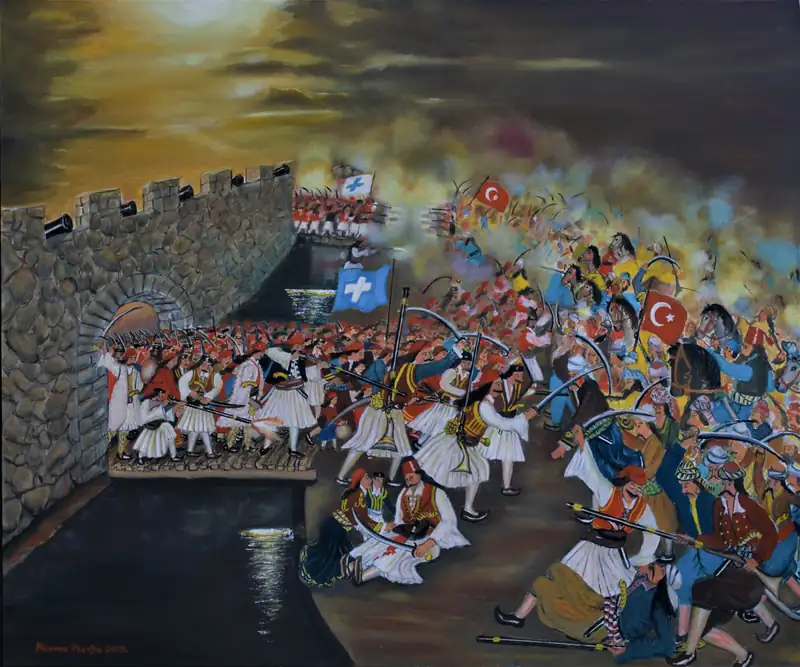
λάδι σε καμβά 100*120 εκ.
Μετά την εξαφάνιση και των πιο αναγκαίων τροφίμων, άρχισαν να καταναλώνουν όλα τα ζώα, άλογα, μουλάρια, γαϊδούρια, σκυλιά, γάτες και ποντίκια... Μετά αλμυρήθρες και καβούρια. Όταν βεβαιώθηκαν ότι οι αγώνες τους ήταν πια μάταιοι και οι εχθροί κατέλαβαν ακόμα και το κρυφό πέρασμα της λίμνης, απελπίστηκαν και αποφάσισαν να κάνουν έξοδο με το σπαθί στο χέρι.
"εκείθε με τους αδελφούς εδώθε με το χάρο". Σημαντική είναι η απάντηση που έδωσε ο Ιμπραήμ στον Δεριγνί όταν τον επισκέφτηκε στο Νεόκαστρο "το βλέπεις εκείνο το χιόνι; έτσι θα λυώναμε κ'εμείς αν η φρουρά του Μεσολογγίου είχε τροφές για τρεις ακόμα εβδομάδες."
Σκοτώθηκε μόνη της ...
Ο ξάδερφος του καπετάν Κίτσου Τζαβέλα, ο Κώστας Διαμαντής, έσωσε απ΄ όλους τους τράκους ως εκεί τη γυναίκα του που ήταν αδύναμης κράσης. Άμα φτάσανε στο ριζό, δεν μπόραγε πια να περπατήσει παραπέρα και παρακαλούσε τον άνδρα της να την σκοτώσει με τα ίδια του τα χέρια… Εκείνος την παρακίναγε να τρέξει να σωθούνε από την μανία των Τούρκων. Άρπαξε την πιστόλα του και σκοτώθηκε μόνη της για να μην πέσει στα χέρια του εχθρού. Όλοι λυπηθήκαμε άμα το μάθαμε μα δεν έτυχε κάποιος εκείνη την ώρα να τους συντρέξει. Νίκος Κασομούλης.
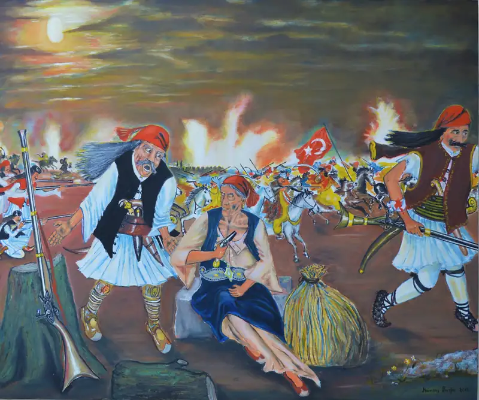
λάδι σε καμβά 100*120 εκ.
Γνωστές και άγνωστες στιγμές της ελευθερίας
Αληθινές ιστορίες που μοιάζουν παραμύθι...
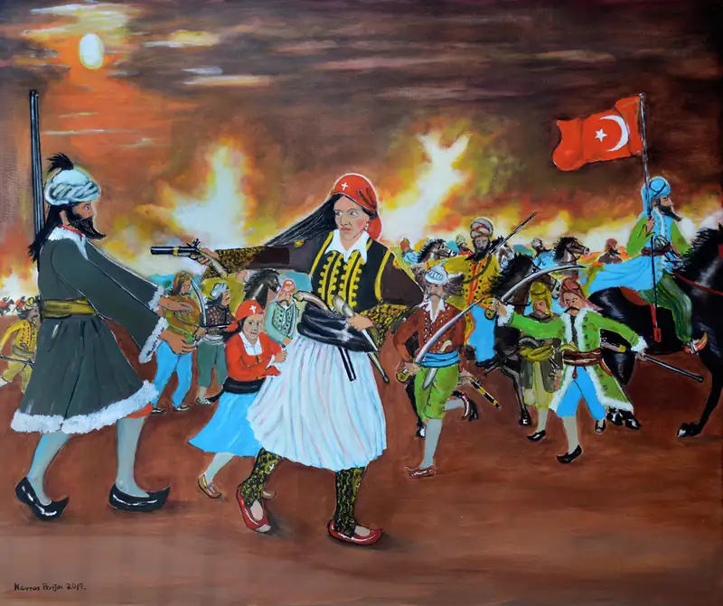
Αλεφαντώ λάδι σε καμβά 100 *120 εκ
Η ηρωίδα Αλεφαντώ αψηφούσε τους κινδύνους και τις κακουχίες...Ο σύζυγος της ήταν ο Ζανάς που σκοτώθηκε στην Κυλλήνη τον Μάιο του 1821. Έμεινε χήρα με ένα μικρό κοριτσάκι την Άννα. Όταν ο Ιμπραήμ πυρπόλησε το Γαλαξείδι όπου είχε καταφύγει η Αλεφαντώ, αυτή πήγε στον Κάλαμο (νησάκι του Ιονίου) και μετά στο Μεσολόγγι. Εκεί με το καριοφίλι στο χέρι πολεμάει τον εχθρό. Γενναία και ατρόμητη σαν Αμαζόνα πολεμούσε κατά την έξοδο, αλλά όταν οι Τούρκοι απείλησαν να σκοτώσουν το παιδί της αν δεν σταματούσε τον πόλεμο να παραδωθεί.. νίκησε η μητρική καρδιά. Πουλήθηκαν, αυτή και η κόρη της, στα σκλαβοπάζαρα της Αιγύπτου. Γύρω στο 1870 κατάφερε να γυρίσει στο Γαλαξείδι μόνη της. Εκεί δεν βρήκε κανέναν γνωστό της...
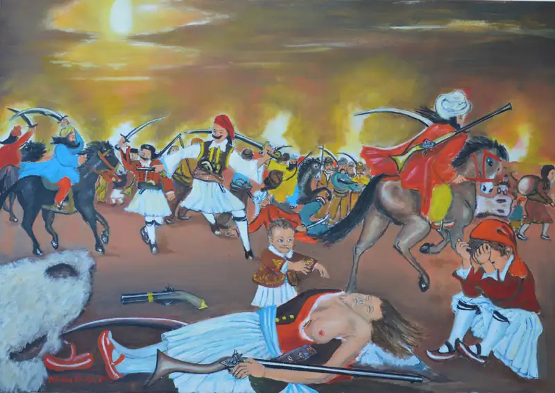
λάδι σε καμβά 70*100 εκ.
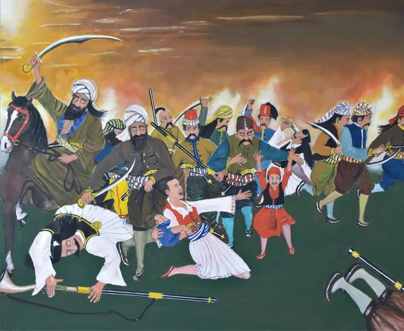
λάδι σε καμβά 100*120 εκ.
Σκλαβοπάζαρο
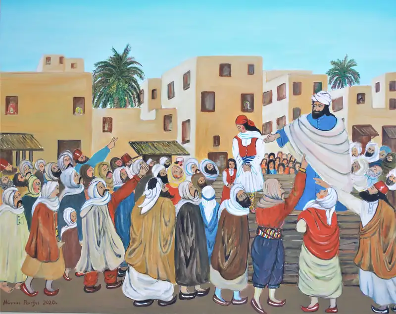
Σκλαβοπάζαρο 80*100 εκ.
6.000 γυναίκες και παιδιά αιχμαλωτίστηκαν και πουλήθηκαν σε: Κωνσταντινούπολη, Σμύρνη, Αλεξάνδρεια.
Άλλη ηρωίδα γυναίκα, με τσακισμένο το γόνατο, σερνάμενη κατόρθωσε να φτάσει στην πόρτα της μπαρουταποθήκης του Καψάλη."είμαι βαρεμένη, τους φωνάζει ανοίχτε μου, μη μ'αφήνετε απ'έξω",και αφού λύση δεν είχε άλλη, τη φωτιά ανέμενε του Χρήστου του Καψάλη".
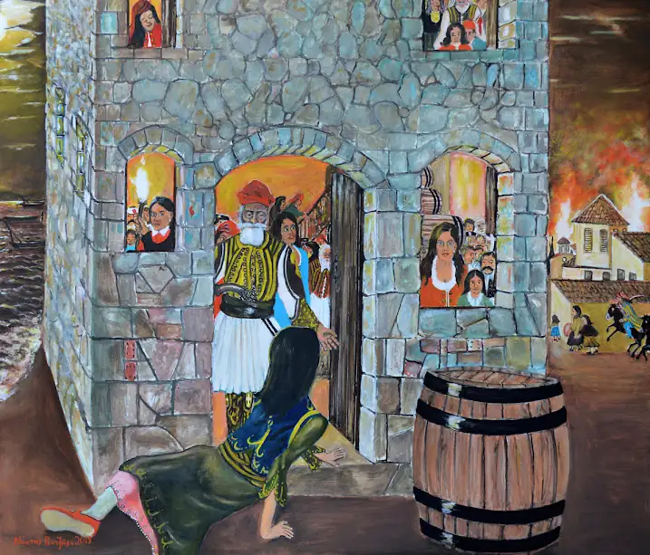
λάδι σε καμβά 100*120 εκ.
«Το Μεσολόγγι», Α. Βαλαωρίτου
Στον τάφο του κλεισμένο, το Μεσολόγγι,
σκέλεθρο, γυμνό, ξεσαρκωμένο,
δεν παραδίδει τα άρματα,
δεν γέρνει το κεφάλι…
Κρατεί για νεκροθάφτη του το Χρήστο τον Καψάλη.
Η πολιορκία του Ναυπλίου
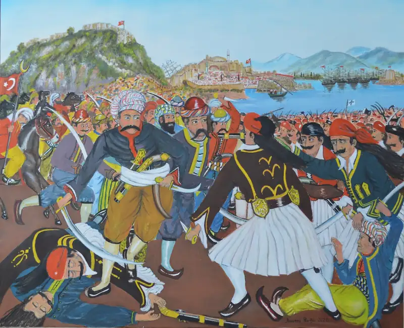
λάδι σε καμβά 90*110 εκ.
Το Ναύπλιο πολιορκήθηκε από την αρχή του αγώνα , αλλά η πολιορκία λύθηκε μετά την επιτυχημένη εισβολή του Κεχαγιάμπεη στην Αργολίδα. Όμως την εποχή της συγκομιδής των καρπών μαζεύτηκαν εκεί Κρανιδιώτες , Άργειοι και άλλοι που κατέλαβαν επίκαιρες θέσεις για να ματαιώσουν την αρπαγή της σοδειάς από τους Τούρκους και να επαναλάβουν την πολιορκία. Οι Έλληνες μη διαθέτοντας τα αναγκαία για ρεσάλτο στα φρούρια τα οποία διέθεταν αξιόλογο στρατό και (τριακόσια) 300 κανόνια , περίμεναν να τους παραδώσει το Ναύπλιο "η πείνα" και έτσι περιορίστηκαν σε στενή πολιορκία από στεριά και θάλασσα....
Τα πλοία της Μπουμπουλίνας στ' Ανάπλι
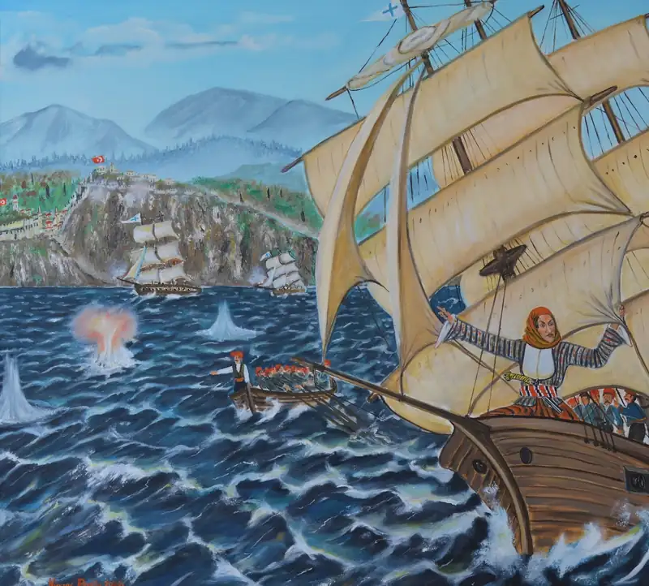
Μπουμπουλίνα λάδι σε καμβά 110*120 εκ.
Τρεις Τουρκοπούλες κάθονται στου Αναπλιού την πόρτα.
Μοιρολογούσαν κι έλεγαν, μοιρολογούν και λένε.
Ανάπλι για δεν χαίρεσαι, για δεν βαρείς παιχνίδια.
Και τι καλό χω να χαρώ και να βαρώ παιχνίδια;
Στεργιάς με δέρνει ο Πρίγκιπας, πελάγου η Μπουμπουλίνα.
Μαντώ Μαυρογένους
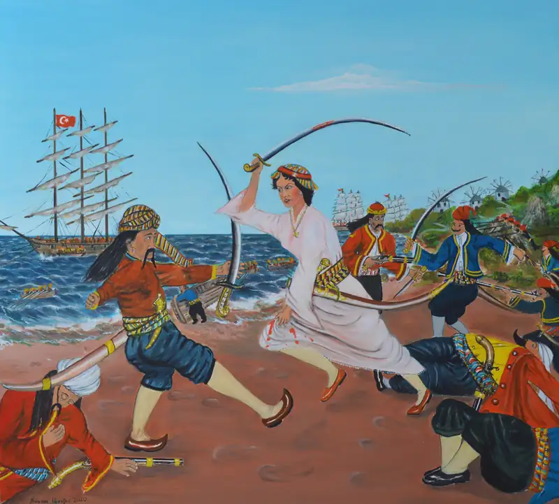
λάδι σε καμβά 110*120 εκ.
Η Μαντώ διέθεσε στην επανάσταση όλη της περιουσία,την αγωνιστικότητά της, τις γνώσεις της και τις σπουδαίες γνωριμίες της. Όταν ένα πολεμικό πλοίο με Αλγερινούς έκανε απόβαση στην Μύκονο η εικοσιπεντάχρονη Μαντώ σαν άλλη Ζαν ντ'Αρκ με το σπαθί στο χέρι εμψύχωσε και οδήγησε τους πατριώτες της σε μια ολοκληρωτική νίκη. Της αποδόθηκε ο τίτλος "η ηρωίδα της Μυκόνου". Η Μαντώ έμεινε αγωνιζόμενη στις επάλξεις μέχρι την απελευθέρωση.
Δόμνα Βισβίζη - "Η ατρόμητη καπετάνισσα"
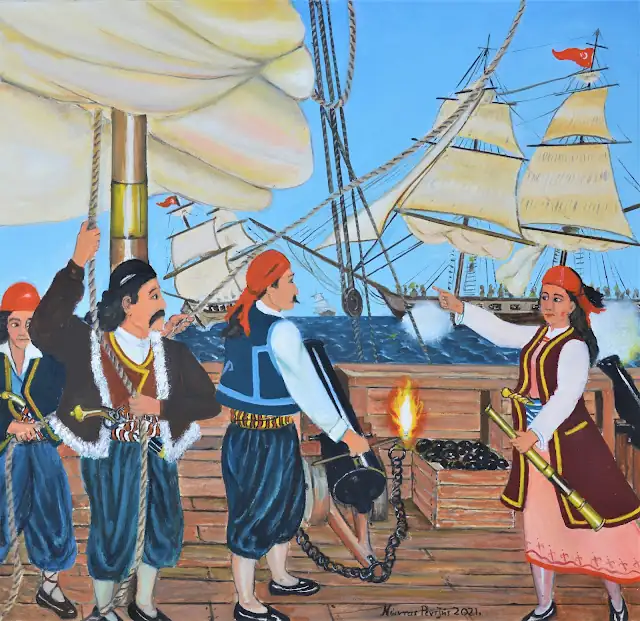
Λάδι σε καμβά 65*65 εκ.
Μετά το θάνατο του Χατζή Αντώνη Βισβίζη (21 Ιουλίου 1822), καπετάνιου και καραβοκύρη του πλοίου "Καλομοίρα" ανέλαβε το "Κουβέρνο" η σύζυγός του Δόμνα η οποία είχε αποκτήσει την ανάλογη εμπειρία συμμετέχοντας με τον σύζυγό της στις επιχειρήσεις του αγώνα. Το πλοίο ήτανε μπρίκι με πλήρωμα 140 ναύτες και οπλισμένο με κανόνια. Η Δόμνα συνέχισε τον αγώνα με το πλοίο και τα πέντε παιδιά της, λαμβάνοντας μέρος σε όλες της ναυμαχίες... Μετά το τέλος της Επανάστασης η Δόμνα εγκαταστάθηκε στην Ερμούπολη της Σύρου και πέθανε πάμπτωχη... Όπως και οι περισσότεροι αγωνιστές, τίποτα πρωτόγνωρο...
Ο Ιμπραήμ στη Μάνη
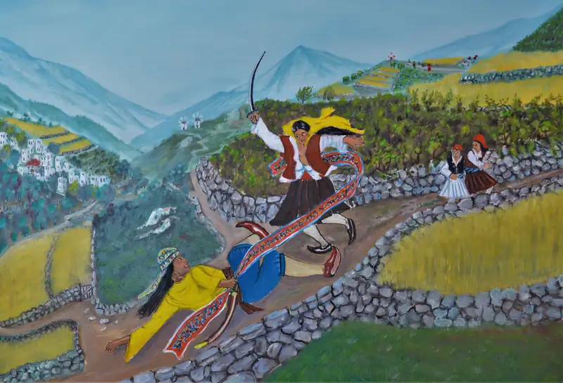
Σπυρίδων Τρικούπης - λάδι σε καμβά 80*110 εκ.
28-8-1826 στο χωριό Πολυάραβο της Μάνης έγινε σκληρή μάχη. Οι Έλληνες νίκησαν και έτρεψαν σε φυγή τους πολυάριθμους εχθρούς. Αξιοσημείωτα είναι τα ακόλουθα γυναικεία κατορθώματα.
Η Ελένη Αναειπόνυμφη, κρατώντας τα δύο ανήλικα παιδιά της και καταδιωκόμενη από κάποιον Αιγύπτιο, προσπάθησε να καταφύγει στο βουνό. Καθώς έτρεχε λύθηκε η μακριά ζώνη της. Ο Αιγύπτιος άρπαξε την άκρη που σερνόταν κάτω και προσπάθησε να συγκρατήσει την γυναίκα από αυτή. Εκείνη όμως άφησε τα παιδιά της, έπιασε την άλλα άκρη της ζώνης όπου είχε κρυμμένα και όλα τα λεφτά της, δέκα δίστηλα,και την τράβηξε προς το μέρος της. Όταν τεντώθηκε η ζώνη, την άφησε απότομα και ο Αιγύπτιος έπεσε ανάσκελα καταγής. Άρπαξε το σπαθί του και τον τραυμάτισε, σώζοντας έτσι τον εαυτό της,τα παιδιά της και την περιουσία της...
H Πανώρια
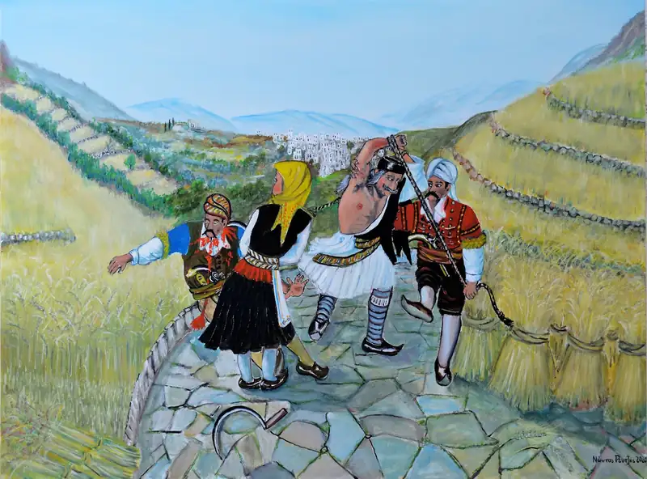
Λάδι σε καμβά 80*110 εκ.
Στην Μάνη ο γερο-Βοζίκης θέριζε και όταν δύο Αιγύπτιοι τον άρπαξαν να τον δέσουν,η κόρη του η Πανώρια έκοψε με το δρεπάνι της το λαρύγγι του ενός και ύστερα με την βοήθεια του πατέρα της σκότωσαν και τον άλλον.
Γιάννης Μακρύγιαννης
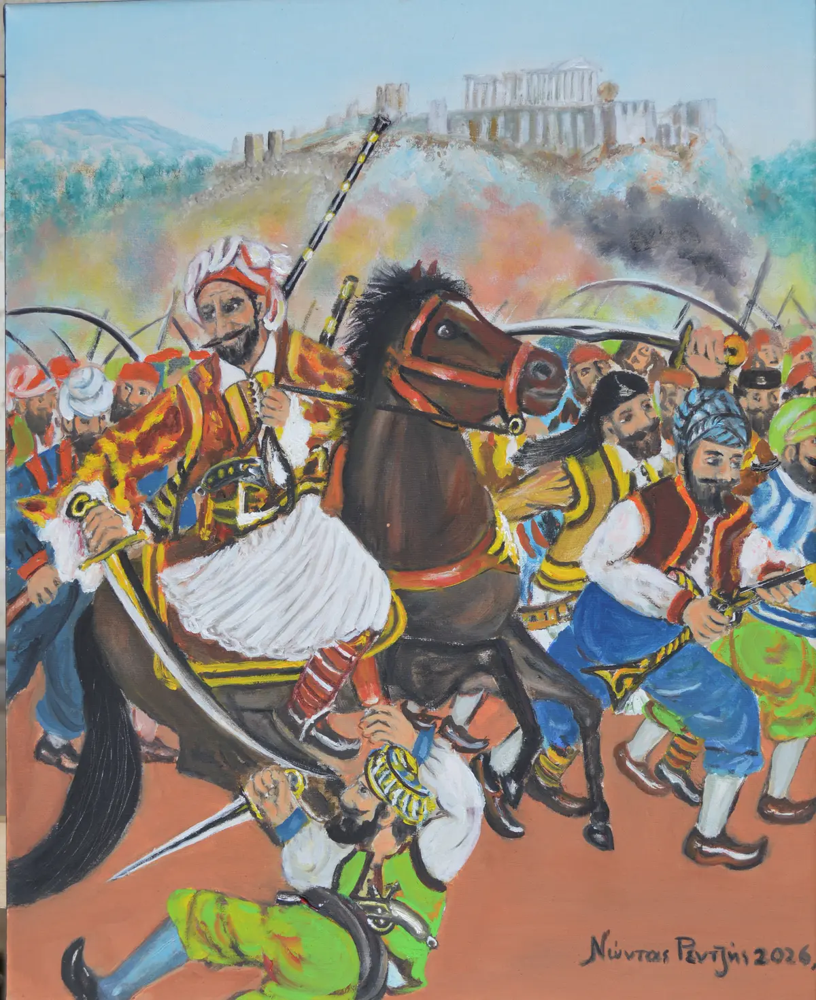
Λάδι σε καμβά 50*40 εκ.
Ο Στρατηγός Γιάννης Μακρυγιάννης στον αγώνα.
Η ναυμαχία του Ναβαρίνου
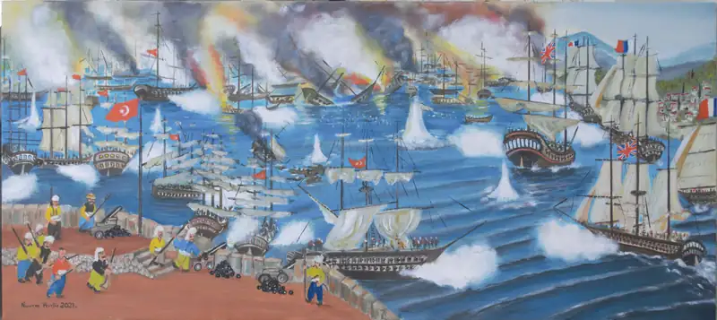
Λάδι σε καμβά 50*112 εκ.
Μετά το ολοκαύτωμα του Μεσολογγίου ο φιλελληνισμός που είχε καμφθεί εξαιτίας των εμφυλίων πολέμων , φούντωσε ξανά... Ο Τουρκο-αιγυπτιακός στόλος συγκεντρώθηκε στον κόλπο του Ναβαρίνου. Οι τρείς Ναύαρχοι των μεγάλων δυνάμεων Αγγλίας , Γαλλίας και Ρωσίας, " Κόδριγκτον, Δεριγνύ , Χέυδεν ", έλαβαν οδηγίες από τις κυβερνήσεις τους , σύμφωνα με τις οποίες όφειλαν να παρεμβληθούν μεταξύ των αντιμαχομένων Ελληνων και τουρκο-αιγυπτίων , για να εμποδίσουν κάθε πολεμική τους ενέργεια. Η εμπλοκή στις 20 Οκτωβρίου 1827 των συμμαχικών στόλων με τον Τουρκο -αιγυπτιακό είχε σαν αποτέλεσμα την καταστροφή του Τούρκο-αιγυπτιακού. Με την Ναυμαχία του Ναβαρίνου άνοιξε ο δρόμος για οριστική επιβολή των αποφάσεων των Μεγάλων Δυνάμεων , που οδήγησαν στην αναγνώριση της Ελληνικής Ανεξαρτησίας. Ο Εμπνευστής της ιερής συμμαχίας πρίγκιπας Μέτερνιχ χαρακτήρισε την καταστροφή του Τούρκο - αιγυπτιακού στόλου ως "αρχή του Βασιλείου του χάους" ...
Η δολοφονία του Καποδίστρια
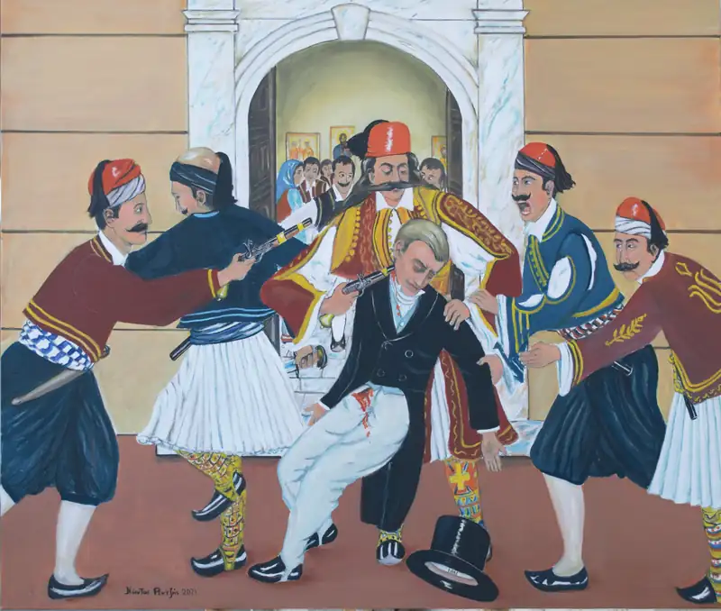
Λάδι σε καμβά 100 x 120 εκ.
Στις 14 Απριλίου 1827 η Γ΄ Εθνοσυνέλευση της Τροιζήνας εξέλεξε τον Ιωάννη Καποδίστρια με επταετή θητεία πρώτο Κυβερνήτη της Ελλάδος. Ως Κυβερνήτης ανακήρυξε την ίδρυση της ελληνικής πολιτείας και προώθησε σημαντικές μεταρρυθμίσεις για αναδιοργάνωση της κρατικής μηχανής καθώς και τη θέσπιση του νομικού πλαισίου της νέας πολιτείας. Αναδιοργάνωσε τις ένοπλες δυνάμεις και πέτυχε παράλληλα την επέκταση των συνόρων του νέου κράτους και την κατοχύρωση της ελληνικής ανεξαρτησίας. Αντιμετώπιζε την εχθρότητα της Γαλλίας και της Αγγλίας και τη σκληρή αντιπολίτευση των παραμερισμένων από την εξουσία κοτζαμπάσηδων και πλοιοκτητών. Διέθεσε όλη του την περιουσία για τους σκοπούς του κράτους, ενώ αρνήθηκε ν’ αποδεχθεί τον μισθό του Κυβερνήτη. Η δολοφονία του οργανώθηκε κι εκτελέστηκε από τον Κωνσταντίνο Μαυρομιχάλη και τον ανιψιό του Γεώργιο την 27 η Σεπτεμβρίου 1831 έξω από την εκκλησία του Αγίου Σπυρίδωνα, στο Ναύπλιο. όπου πήγε να εκκλησιαστεί.
Άργος 1833 - Μια σφαγή από παρεξήγηση...
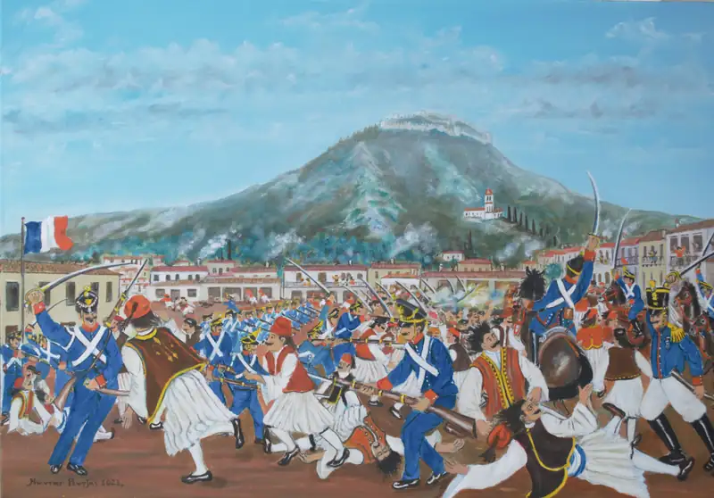
Λάδι σε καμβά 70*100 εκ.
«Η ΣΦΑΓΗ ΤΟΥ ΑΡΓΟΥΣ» ΑΠΟ ΤΟΥΣ ΓΑΛΛΟΥΣ. Στις 4 Ιανουαρίου του 1833, λίγες μέρες προτού έρθει ο Όθωνας στη χώρα μας, Γάλλοι στρατιώτες, με επικεφαλής τον Συντ/χη Στοφέλ, διέπραξαν μια μοναδικής αγριότητας σφαγή στην πόλη του Άργους. Περισσότεροι από 250 πολίτες σκοτώνονται μέσα σε 4 ώρες. Τα ΑΙΤΙΑ της τραγωδίας αυτής, πρέπει να αναζητηθούν στις δράσεις των αλληλοσπαρασσόμενων πολιτικών κομμάτων (φατριών) μετά τη δολοφονία του Καποδίστρια, που είχαν μετατρέψει την Πελοπόννησο σε πεδίο εμφύλιων συγκρούσεων. Κυριαρχούσε, με τη βοήθεια του γαλλικού στρατού, το Γαλλικό κόμμα του Κωλέττη, η οποία εμφάνιζε τον Θ. Κολοκοτρώνη και τους οπλαρχηγούς συντρόφους του, ως στασιαστές, επικίνδυνους για τον αναμενόμενο νεαρό βασιλιά και την αντιβασιλεία. Ο Κωλέττης έπεισε τους Γάλλους ότι το Άργος ήταν το άντρο των συνομοτών κι ότι «...εξύφαινον συνομοσίαν κατά του γαλλικού στρατού εν Άργει...». Έτσι έστειλαν στο Άργος 750 Γάλλους στρατιώτες (4 λόχοι) και επί πλέον 5 λόχους με Κορσικανούς στατιώτες, με επικεφαλής τον Συντ/χη Στοφέλ. Οι Γάλλοι πίστευαν ότι οι οπλαρχηγοί, Τσώκρης, Κριεζώτης και Στράτος, που ήταν στο Άργος «...εξύφαινον κατ’ αυτών συνωμοσίαν...» και η συμπεριφορά τους έγινε σκληρή και βίαιη στους Αργείους. «…Μια σπινθήρ απητείτο δια την έκριξιν και πυρκαΐαν…».
Οι ΑΦΟΡΜΕΣ που οδήγησαν στη μεγάλη σφαγή του Άργους ήταν δύο:
- Η άρνηση του Υπολοχαγού Σπ. Καλοσγούρου, φίλου του αρχηγού του ιππικού Δημ. Καλλέργη (που επειδή έλειπε, του είχε εμπιστευθεί τη φύλαξη του σπιτιού του και της οικογένειάς του), να παραδώσει την οικία του Καλλέργη στους Γάλλους, η κατάληψη δια της βίας της οικίας από τον Στοφέλ, η αντίσταση του Καλοσγούρου, η σύλληψη και η άμεση καταδίκη του σε θάνατο και η άμεση εκτέλεσή του, δια τουφεκισμού, μαζί με τη σύλληψη ως ομήρου του μικρού γιου του Θ. Κολοκοτρώνη του Κολίνου που εφιλοξενείτο στο σπιτι του Καλλέργη, αναστάτωσαν τους πολίτες του Άργους που πίστεψαν ότι οι Γάλλοι κατέλαβαν την πόλη ως κατακτητές και δυνάστες.
- Οι άτακτοι στρατιώτες, Ρουμελιώτες μισθοφόροι υπό τον Κριεζώτη,τον Στράτο κι οπαδοί του Θ. Γρίβα, προκαλούσαν απροκάλυπτα τους Γάλλους στρατιώτες. Ένας από αυτούς, σε μια ταβέρνα, στην αγορά του Άργους, τα έπινε με την παρέα του και μεθυσμένος καυγάδισε με έναν Γάλλο στρατιώτη από την Κορσική, που βρισκόταν μαζί με άλλους Γάλλους στρατιώτες. Ήρθαν στα χέρια οι δυο παρέες και ο Έλληνας μεθυσμένος πυροβόλησε ανεπιτυχώς τον Γάλλο. Η ταβέρνα ήταν πολύ κοντά στον στρατώνα των Γάλλων και οι Γάλλοι στρατιώτες κατέφυγαν κυνηγημένοι εκεί και ζήτησαν τη βοήθεια των δικών τους.
Τότε έγινε μια τρομερή και θανατηφόρα παρεξήγηση. Άρχισε να χτυπά η μεγάλη καμπάνα του Μητροπολιτικού ναού του Αγίου Ιωάννη του Προδρόμου. Την χτυπούσαν για να καλέσουν τους Αργείτες σε συνέλευση, για την εκλογή επιτροπής υποδοχής του βασιλιά Όθωνα. Οι Γάλλοι δεν το ήξεραν αυτό. Πίστεψαν ότι στασιαστές καλούν το λαό σε εξέγερση εναντίον τους κι έδωσαν τη διαταγή να επιτεθούν αδιακρίτως μέσα στην πόλη του Άργους. Ο Τσώκρης κρύφτηκε, ο Κριεζώτης, ο Στράτος και οι άτακτοι στρατιώτες τους σκόρπισαν στα γύρω χωριά του Άργους (και τα ρίμαξαν στο πλιάτσικο). Τελικά όλοι αυτοί κατάφεραν να διαφύγουν και να σωθούν χωρίς απώλειες. Όχι όμως και ο άμαχος πληθυσμός του Άργους, που άοπλος κι αθώος τον κατέσφαξαν οι Γάλλοι στρατιώτες, που αδιακρίτως εφόνευσαν άνδρες, γυναίκες, γέρους και παιδιά. Η σφαγή κράτησε 4 ώρες και σταμάτησε όταν ο επίσκοπος Άργους Άνθιμος, μπόρεσε να εξηγήσει στον Συντ/χη Στοφέλ «...την αθωότητα της σφαζώμενης πόλεως, τον σκοπόν της παρανοηθήσης κωδωνοκρουσίας και τας θηριωδίας των Γάλλων στρατιωτών κι επικαλέσθη τη δικαιοσύνη και την φιλανθρωπίαν του.’’ Οι νεκροί ήταν 250 – 300 και θάφτηκαν σε δύο ομαδικούς τάφους, χωρίς κηδεία, χωρίς ένα σταυρό στους τάφους και χωρίς τους συγγενείς τους για τον «τελευταίο ασπασμό». Γιατί οι Γάλλοι φοβήθηκαν και το απαγόρευσαν. Το Άργος εθρήνησε και μοιρολόγησε τα αδικοχαμένα παιδιά του, που πήγαν άκλαυτα κι αλειτούργητα στον άλλο κόσμο... «Νάσουν ν’ ακούσεις κλάματα κι’ αντρίκια μοιρολόγια.»
Διαβάστε περισσότερα...
Ο ζωγράφος σε νεαρή ηλικία
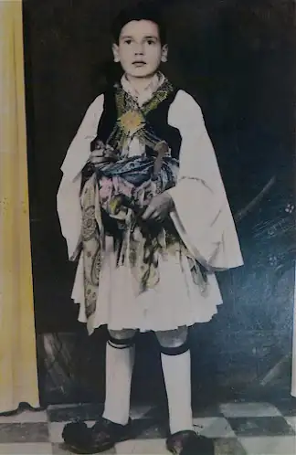